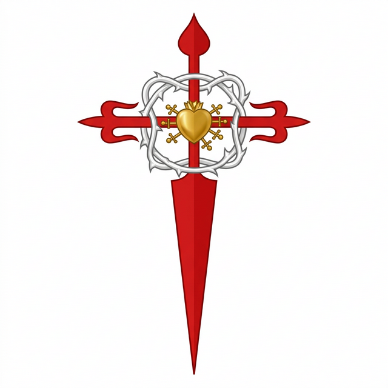
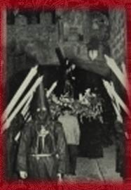
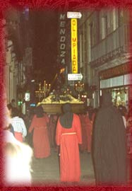
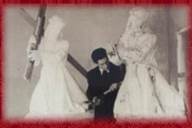
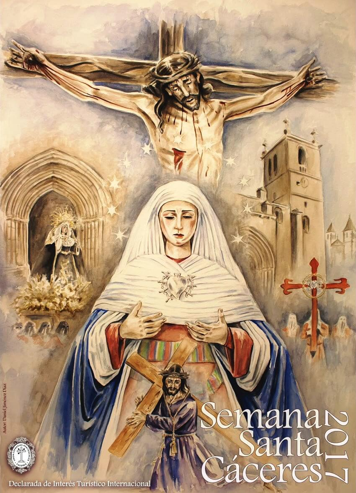
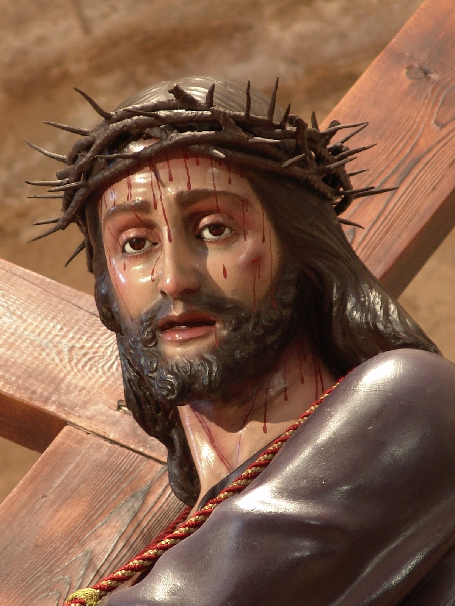
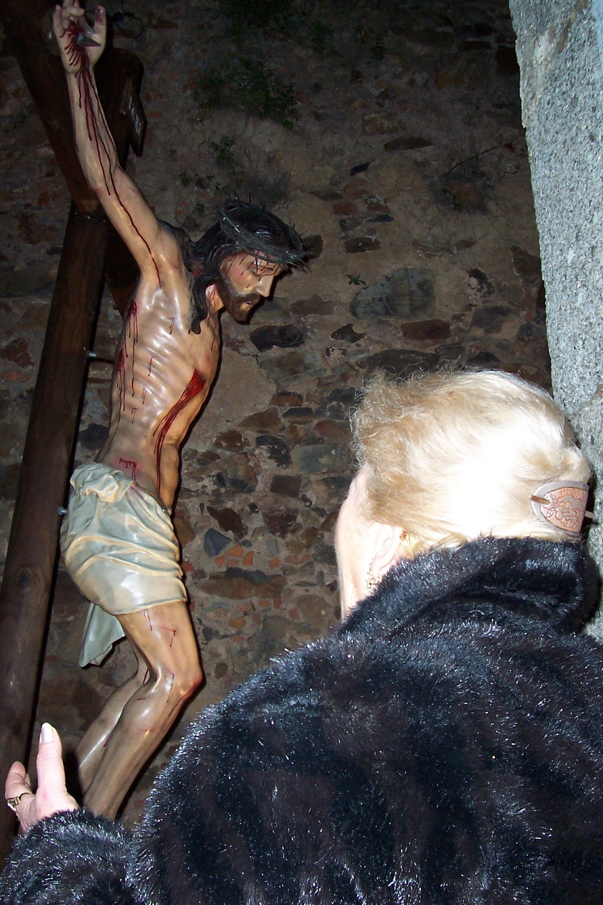
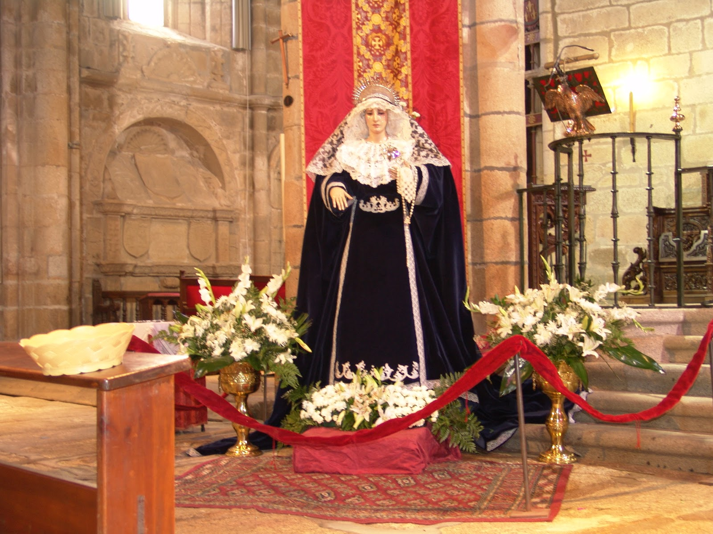
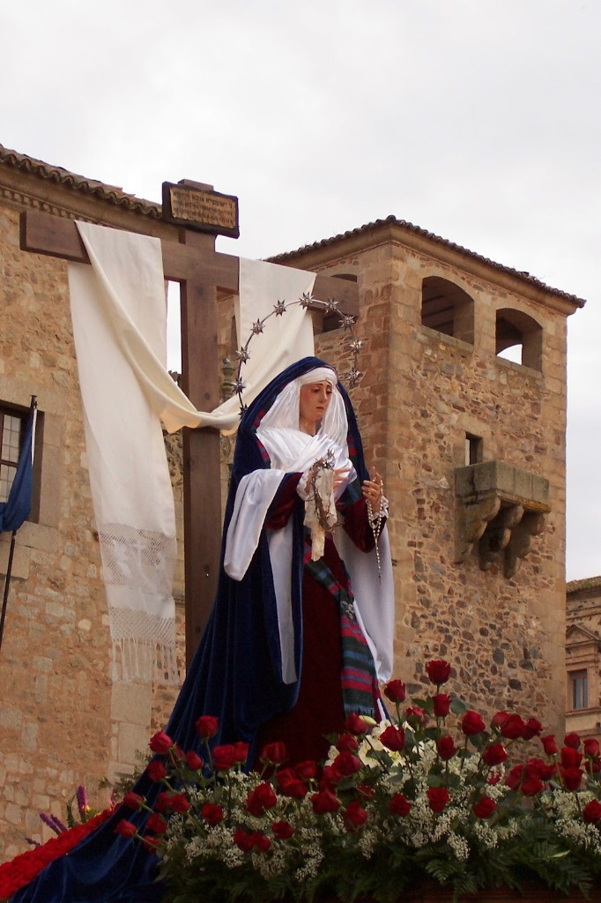

Solemne Estación de Lunes Santo y Sábado Santo
VIVIR LA SEMANA SANTAComo Mayordoma y en comunión con la Junta Directiva de esta Hermandad, queremos daros la bienvenida a nuestra página web, agradeciendo vuestra visita y aprovechando la ocasión para presentaros la Cofradía del Cristo de las Batallas y de María Santísima de los Dolores para que en ella descubráis un lugar de encuentro, de Hermandad y fraternidad entorno a un signo cristiano como es Cristo y su Pasión.
Desde esta pequeña ventana, deseamos establecer un vínculo entre todos (Hermanos cofrades y no cofrades), por el cual, con la facilidad que las tecnologías de este siglo XXI nos ofertan, poder dar a conocer la Hermandad y estar al día de noticias e informaciones referentes a la misma.
De esta forma, a través de aportaciones tanto de los hermanos cofrades, directivos y todo aquel que lo desee, desarrollaremos entre todos, la devoción y proyección de la fe por nuestros Sagrados Titulares.
Bienvenidos a todos aquellos que visitáis nuestra página y gracias a todos por entrar en ella. Esperamos que esta humilde cofradía sea de vuestro agrado.
Cáceres, a 7 de Junio de 2008
Inmaculada Hernández Paz
— La Mayordoma —

La Cofradía se constituye oficialmente el 24 de octubre de 1951, con la aprobación de sus primeros estatutos en diciembre de 1952. Inicialmente denominada "Cofradía del Stmo. Cristo de las Batallas", fue fundada por un grupo de veteranos y caballeros mutilados.
La imagen titular, bendecida en 1953, es una talla del artista Antonio Arenas Martínez, fiel copia de la que los Reyes Católicos portaban en sus campañas. Durante esta etapa, la procesión del Lunes Santo poseía un marcado carácter militar, escoltada por gastadores del CIR y bandas del acuartelamiento mendozano.

Tras un periodo de inactividad, en 1984 un joven grupo de entusiastas retoma la hermandad. Se recupera la elegancia de las túnicas rojas con capuces negros y se incorporan nuevas imágenes que enriquecen el patrimonio.
En los años 80 se integra la imagen de María Stma. de los Dolores (Servitas), una talla anónima del siglo XVIII. En 1987 se inicia la procesión del Sábado Santo con la Virgen del Buen Fin, y en los 90 se incorpora el soberbio Cristo del Refugio, un crucificado de gran valor artístico.

A lo largo de los años, la Cofradía ha ido enriqueciendo su patrimonio no solo con imágenes, sino también con insignias, estandartes y enseres de gran valor. El espíritu de hermandad nos ha llevado a establecer lazos estrechos con otras ciudades, destacando el hermanamiento con la Cofradía del Cristo de las Batallas de Ávila en 1992.
Estos vínculos se extienden en nuestra ciudad con el Nazareno y el Cristo Negro, creando una red de fraternidad que fortalece la Semana Santa cacereña.

Al llegar el nuevo milenio, la Cofradía celebra su 50º aniversario (2001) consolidada como una de las hermandades más queridas de Cáceres. En 2007 se marca un hito histórico con la elección de Inmaculada Hernández Paz como la primera mujer Mayordoma de la hermandad.
Hoy, con 73 años de fe y penitencia, seguimos mirando al futuro con la misma ilusión de nuestros fundadores, manteniendo viva la llama de la devoción en el corazón de la Ciudad Monumental.

Antonio Arenas Martínez (1953). Talla de madera de pino de Soria representando a Cristo en su primera caída. Es una fiel copia del que portaban los Reyes Católicos en sus campañas.
Ver más detalles
José de Proenza (1780). Crucificado de tamaño natural donado por D. José de Loaisa del Arco. Conocido como el "Cristo viajero", es una de las joyas barrocas de la ciudad.
Ver más detalles
Anónima (S. XVIII). Imagen de candelero restaurada en 1985 por Francisco Berlanga de Ávila. Representa la advocación de los Servitas, adquirida por la cofradía en 1953.
Ver más detalles
Francisco Berlanga (1990). Soledad de María al pie de la Cruz. Realizada a partir de la primitiva mascarilla de la Virgen de los Dolores del siglo XVIII.
Ver más detallesProcesión del Cristo de las Batallas
Salida: 20:50h - Concatedral de Santa María
Puntos clave: El paso del Cristo sobre un calvario de 260 docenas de claveles amarillos por el Arco de la Estrella y la Plaza Mayor.
Procesión de Nuestra Señora del Buen Fin
Salida: 20:00h - Concatedral de Santa María
Puntos clave: Estación de penitencia solemne con la imagen de Nuestra Señora del Buen Fin y Nazaret, obra de Francisco Berlanga.
S.I. Concatedral de Santa María (Salida) • Plaza de Santa María • Arco de la Estrella • Plaza Mayor (vuelta completa) • Pintores • San Juan • Plaza de San Juan • Gran Vía • Arco de la Estrella • Plaza de Santa María • S.I. Concatedral de Santa María (Entrada).
S.I. Concatedral de Santa María (Salida) • Arco de la Estrella • Adarve de la Estrella • Adarve de Santa Ana • Adarve del Padre Rosalío • Adarve de la Puerta de Mérida • Puerta de Mérida • Pizarro • Sergio Sánchez • Plaza de San Juan • Pintores • Arco de la Estrella • Plaza de Santa María • Palacio Episcopal (Entrada).
Contamos con tallas de incalculable valor artístico, desde el barroco del siglo XVIII hasta obras contemporáneas de maestros como Francisco Berlanga.
Cruces de guía, estandartes bordados y el característico calvario de claveles amarillos que distingue nuestra procesión del Lunes Santo.
73 años de fe custodiados en el corazón del casco histórico de Cáceres, Patrimonio de la Humanidad.
Forma parte de nuestra historia. Si deseas inscribirte como nuevo hermano o necesitas actualizar tus datos, puedes descargar nuestro boletín oficial.